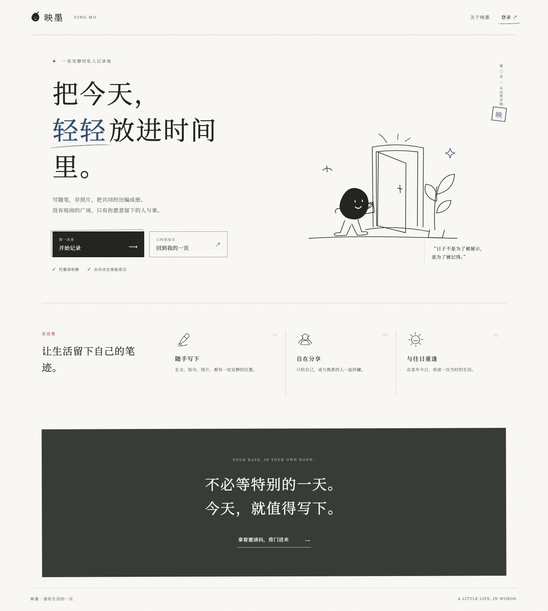
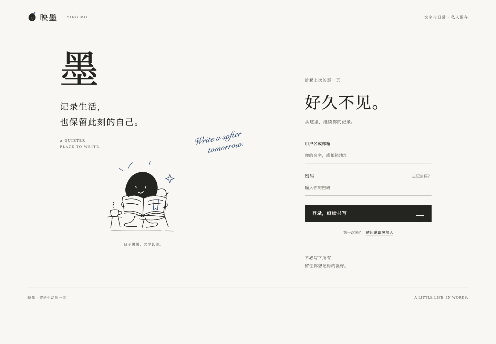
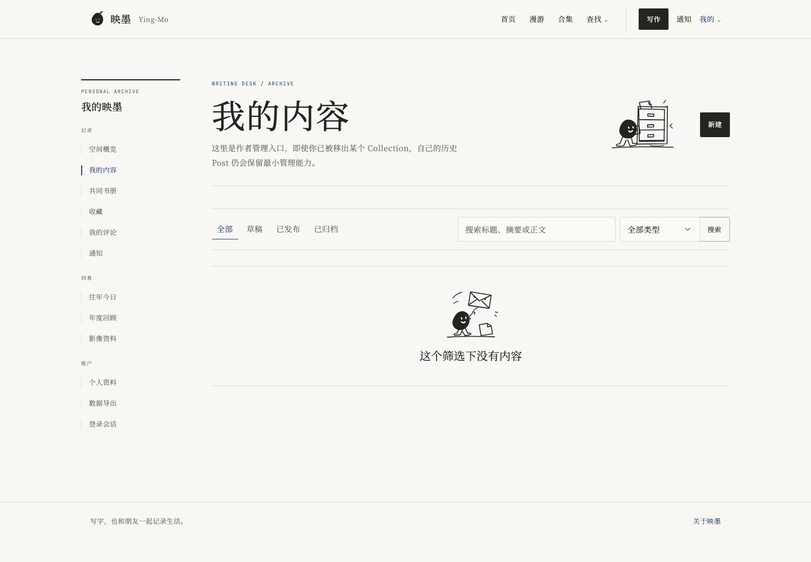
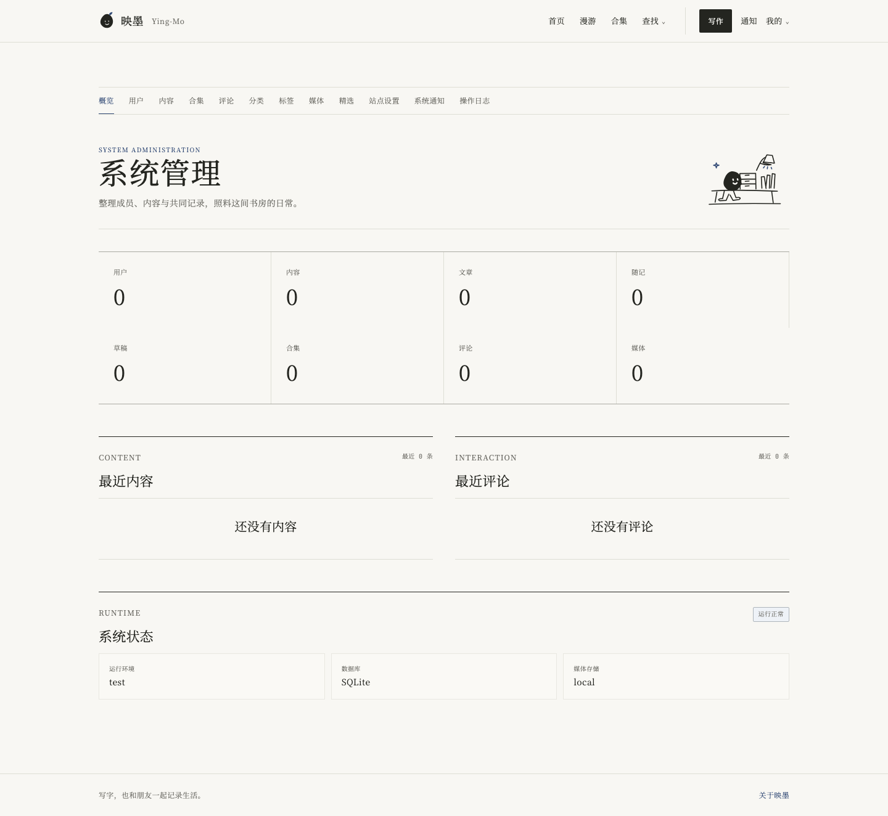

<!doctype html><html lang="zh-CN"><meta charset="utf-8"><meta name="viewport" content="width=device-width,initial-scale=1"><title>映墨 · 全站 UI 升级预览</title><style>*{box-sizing:border-box}body{margin:0;background:#f8f7f3;color:#242520;font-family:"Songti SC","Noto Serif SC",serif}main{max-width:1280px;margin:auto;padding:32px 40px}.head{display:flex;justify-content:space-between;align-items:center;border-bottom:1px solid #deded5;padding-bottom:20px}.brand{font-size:22px;letter-spacing:.12em}.head a{color:#334b76;font-size:12px;text-decoration:none}h1{font-size:32px;font-weight:400;letter-spacing:.06em;margin:28px 0 12px}p{font-size:13px;color:#72716b;margin-bottom:28px;line-height:1.9}.grid{display:grid;grid-template-columns:1fr 1fr;gap:26px 32px}.card{color:inherit;text-decoration:none}.card>span{display:flex;justify-content:space-between;font-size:13px;padding:0 0 12px}.card small{font-size:10px;color:#72716b}.card>div{height:360px;overflow:hidden;border:1px solid #deded5}.card img{width:100%;height:auto;display:block}.foot{display:flex;justify-content:space-between;flex-wrap:wrap;gap:16px;margin-top:28px;border-top:1px solid #deded5;padding-top:18px}.foot a{font-size:11px;color:#334b76}@media(max-width:700px){main{padding:24px}.grid{grid-template-columns:1fr}.card>div{height:300px}h1{font-size:25px}}</style><main><div class="head"><span class="brand">映墨 · 新墨入页</span><a href="index.html">查看 12 幅原创线稿 ↗</a></div><h1>让整间书房，换上新墨。</h1><p>原创墨团线稿、温暖纸色、细边框与安静留白。下面是实际运行页面的截图，包含测试演示数据。</p><section class="grid"><a class="card" href="screenshots/public-welcome-desktop.png"><span>01 / 欢迎页<small>点击查看完整页面 ↗</small></span><div></div></a><a class="card" href="screenshots/public-login-desktop.png"><span>02 / 登录入口<small>点击查看完整页面 ↗</small></span><div></div></a><a class="card" href="screenshots/workspace-posts-desktop.png"><span>03 / 我的内容<small>点击查看完整页面 ↗</small></span><div></div></a><a class="card" href="screenshots/admin-desktop.png"><span>04 / 管理后台<small>点击查看完整页面 ↗</small></span><div></div></a></section><div class="foot"><a href="screenshots/workspace-write-desktop.png">写作页 ↗</a><a href="screenshots/workspace-settings-desktop.png">账户设置 ↗</a><a href="screenshots/workspace-year-in-review-desktop.png">年度回顾 ↗</a><a href="screenshots/login-dark-mobile.png">深色手机登录 ↗</a><a href="screenshots/settings-mobile.png">手机设置 ↗</a></div></main></html>